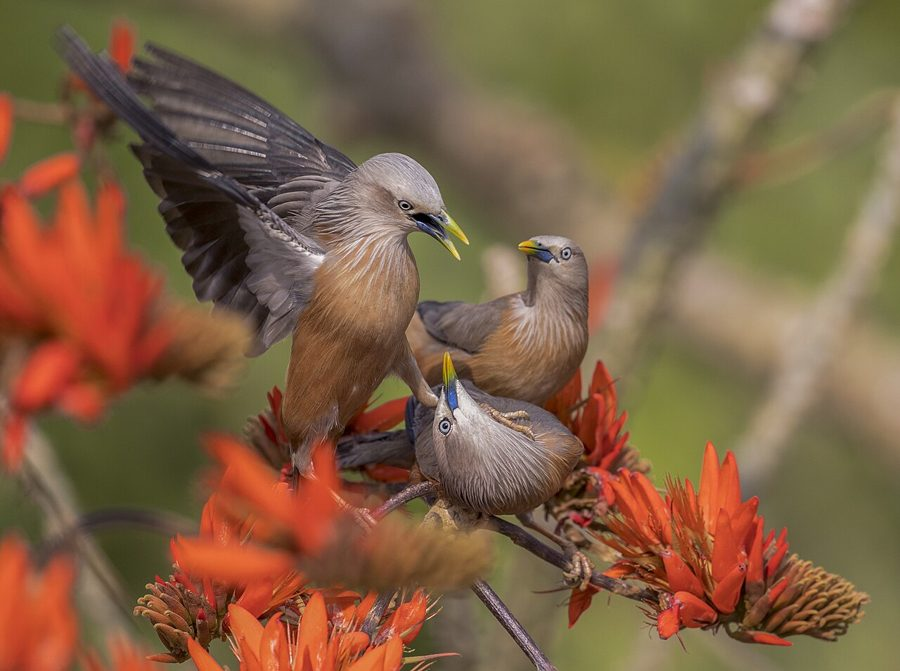

पवईChestnut-tailed Starling
Sturnia malabarica · Sturnidae · BRD-0190

- Scientific name वैज्ञानिक नाम
- Sturnia malabarica (Gmelin, 1789)
- Family कुल
- Sturnidae
- Hindi हिंदी
- पवई
- Local names स्थानीय नाम
- pawai, pavai, chestnut tailed starling, myna
- Status here यहाँ की स्थिति
- native
- Movement आवागमन
- Resident; numbers rise with migrants
- Known from कहाँ दर्ज
- Others have published records from the Basti–Ayodhya districts बस्ती–अयोध्या के ज़िलों से दूसरों के प्रकाशित अभिलेख
- IUCN IUCN
- LC
- Review समीक्षा
- audited and independently read
When to look कब देखें
Present all year. साल भर मौजूद।
Resident populations supplemented by migrants. Winter numbers increase in eastern UP (October–February) as birds move from breeding areas in northern India and Central Asia. Movement patterns linked to fruiting seasons and food availability rather than strict seasonal migration (Ali & Ripley 1968). All migrants and visitors →
Uses and possibilities उपयोग और संभावनाएँ
Drawn from the documented uses in the profile below, where each is labelled traditional, current or a research lead. All uses →
Tell it apart from इनसे अलग पहचानें
पवई / Chestnut-tailed Starling
Sturnia malabarica (Gmelin, 1789) — Sturnidae
पवई — धूसरी चिड़िया, जो खेतों, बागों, और घरों के आस-पास झुंड में रहती है। इसकी पूँछ और पंखों पर काली धारियाँ होती हैं। फलों को खाने के लिए बड़े झुंड बनाते हैं और तेज़ आवाज़ में चिल्लाते हैं।
Quick Identification त्वरित पहचान
| Feature | Description |
|---|---|
| Size | Medium starling; 21–24 cm total length |
| Plumage | Pale ashy-grey overall; white spots on underparts |
| Head | Pale grey; sometimes with slight crest |
| Tail | Chestnut-buff; visible in flight and perching |
| Wings | Greyish with darker edges; chestnut patch visible |
| Bill | Yellow or yellowish (breeding season); darker otherwise |
| Legs | Yellow or yellowish |
| Behaviour | Gregarious; flocking; loud and vocal; arboreal |
Field tip: A medium-sized grey starling often seen in flocks. Pale ashy plumage and chestnut tail are diagnostic. Vocal and noisy; flocks gather at fruiting trees making a distinctive harsh chattering. Found in open country with scattered trees.
हिंदी — कैसे पहचानें:
धूसरी चिड़िया, पेट पर सफेद बिंदु। पूँछ और पंखों पर काली। पीली टाँगें। झुंड में रहती है, बहुत शोर करती है।
Morphology आकारिकी
Biometrics:
| Measurement | Range |
|---|---|
| Total length | 210–240 mm |
| Wing (flattened chord) | 115–128 mm |
| Tail | 80–95 mm |
| Tarsus | 20–24 mm |
| Bill (culmen) | 16–19 mm |
| Weight | 50–65 g |
Size: 21–24 cm long; medium starling.
Plumage: Head and body pale ashy-grey. Underparts white with ashy spotting or barring. Wings greyish-brown with darker flight feathers; chestnut patch on wing coverts. Tail chestnut-buff with dark shaft-streaks.
Bill: Yellow in breeding season; duller yellow or horn-coloured otherwise; pointed and moderately long.
Legs: Yellow or yellowish.
Eyes: Dark brown.
Sexes: Similar; no major dimorphism.
Vocalisations. Call repertoire:
- Flock calls: Harsh, loud chit-chit-chit and chattering sounds. Very noisy in flocks.
- Song: Less structured than some starlings; mixture of squeaks, whistles, and harsh notes.
- Alarm call: Sharp metallic notes when threatened.
हिंदी: सिर और पीठ धूसरे। पेट हल्का, सफेद बिंदु वाला। पूँछ खाकी-भूरी। पीली टाँगें। बहुत तेज़ आवाज़, खासकर झुंड में।
Behaviour & Ecology व्यवहार और पारिस्थितिकता
Foraging ecology: Highly gregarious; feeds in flocks, especially at fruiting trees. Forages on ground for insects and seeds. Feeds on:
- Fruits (figs, berries, cultivated fruit)
- Insects (grasshoppers, beetles, termites)
- Seeds and plant matter
- Nectar (occasionally)
Habitat use: Open forests, forest edges, cultivated areas with scattered trees, gardens, and human settlements. Prefers areas with fruit-bearing trees.
Social behaviour: Gregarious year-round; flocks can be large. Communal roosting at night. Some populations resident; others partly migratory.
Movement patterns: Nomadic in response to fruiting seasons; movements not strictly seasonal but linked to food availability.
Breeding: Cavity nester; breeds March–July. Can breed communally with multiple pairs sharing vicinity.
Activity: Diurnal; feeds throughout the day, with peaks at dawn and late afternoon.
हिंदी: झुंड में रहता है, कभी-कभी सौ से ज्यादा। फलों को खाने के लिए इकट्ठा होता है। जमीन पर कीड़े खोजता भी है। फलों की मौसम के साथ घूमता है।
Life Cycle / Phenology जीवन चक्र
Breeding: Breeds March–July; single or double brood depending on rainfall and food.
Nesting: Uses cavities in trees and cliffs; also uses abandoned nests of other species. Clutch 3–5 eggs; incubation 12–14 days; fledging 18–20 days.
Flocking: Year-round gregarious; flocks increase in size when fruiting occurs.
Moult: Gradual moult in post-breeding season (June–September).
Movement: Partial-migratory pattern; some birds resident year-round; others arrive October–November and depart February–March (winter visitors from north).
| Month | Event |
|---|---|
| October–February | Higher numbers (resident + winter visitors) |
| March–May | Breeding season |
| June–August | Fledging and post-fledging |
| September–October | Moult; some departure of breeders |
हिंदी: कुछ सारे साल यहीं रहते हैं, कुछ ठंड में आते हैं। मार्च-जुलाई में घोंसले बनाते हैं। पूरे साल झुंड में रहते हैं। फलों के मौसम में झुंड बड़े हो जाते हैं।
Host Plants or Prey आहार
| Food Type | Examples | Feeding Behaviour |
|---|---|---|
| Fruits | Figs, berries, guava, mango | Gleaning from trees; communal feeding |
| Insects | Grasshoppers, beetles, termites | Ground foraging; also gleaning |
| Seeds | Grass seeds, weed seeds | Ground foraging |
| Plant matter | Buds, leaves | Occasional |
हिंदी: फल यह पक्षी का मुख्य भोजन है — अंजीर, बेर, अमरूद सब खाता है। कीड़े भी खाता है। बीज भी तोड़ता है। झुंड में फलों की जगह जाता है।
Predators / Natural Enemies शत्रु
- Avian predators: Kestrels, shrikes, crows
- Mammalian predators: Mongoose, snake (occasionally)
- Nest predators: Snakes, crows, palm squirrels
हिंदी: शिकारी चिड़ियाँ शिकार करती हैं। साँपों से घोंसलों को खतरा। भीड़ में होने से थोड़ी सुरक्षा मिलती है।
Agricultural / Human Relevance कृषि प्रासंगिकता
Protected status: Chestnut-tailed Starling is protected under the Wildlife (Protection) Act 1972, Schedule IV. All wild birds listed are protected; hunting and trapping are prohibited.
Agricultural significance: Mixed benefit and damage. Feeds on insects that may be agricultural pests, but also damages ripening fruits (guava, mango, etc.). Net effect context-dependent.
Seed dispersal: Plays role in seed dispersal through consumption and defecation of fruits.
Pest control: Beneficial for consuming insects in agricultural and horticultural areas.
Cultural significance: Known locally by name पवई; recognized in agricultural communities.
हिंदी: यह पक्षी विधि अधिनियम 1972 की सुरक्षित है। फलों को नुकसान पहुँचाता है पर कीटों को खा कर फायदा भी देता है। स्थानीय नाम से जाना जाता है।
Expected Locally स्थानीय रूप से अपेक्षित
Not a field record. Written from published accounts for eastern Uttar Pradesh. No confirmed local sighting yet — if you have seen it, that is what the atlas needs.
अभी तक स्थानीय पुष्टि नहीं। यह विवरण प्रकाशित स्रोतों से है, किसी अवलोकन से नहीं।
This species is NOT a field record. Distribution based on published sources. Chestnut-tailed Starling is expected in open forests, cultivated areas, and human settlements throughout eastern Uttar Pradesh.
GBIF holds published records from these districts. Expected year-round in suitable habitat; numbers here are not known.
Habitat requirements: Open country with fruit-bearing trees; orchards and agricultural areas with trees.
Seasonal variation: Resident year-round with higher numbers October–February; lower numbers April–June.
Nearest published records: GBIF holds published records from these districts.
First record needed: A dated photograph showing the bird clearly (pale grey plumage with chestnut tail visible) in a specific location (with GPS coordinates) submitted through the About page. Photos of flocking behaviour also valuable.
हिंदी: यह स्थानीय रूप से अपेक्षित है, न कि देखे गए बतौर प्रेक्षण। खेतों और बागों में साल भर मिल सकता है। ठंड में ज्यादा दिखता है। झुंड में बहुत शोर करते हैं, आसानी से दिख जाते हैं।
Distribution वितरण
Global range: Indian subcontinent and Central Asia. Resident and partially migratory throughout.
In India: Widespread in open and cultivated habitats across the subcontinent.
In Uttar Pradesh: Common and widespread in suitable habitats.
In Basti district / eastern UP: Common year-round; higher numbers in winter months. Found in orchards, cultivated areas, and open forests.
Research Questions शोध प्रश्न
- What is the population structure (resident vs. migratory) in eastern UP, and how do movement patterns correlate with fruiting seasons?
- What percentage of diet consists of agricultural pest insects versus fruit damage, and how does this vary seasonally?
- How does flocking behaviour affect foraging efficiency, predation risk, and resource defence?
- क्या इस चिड़िया के झुंड का आकार मौसम और खान-पान की उपलब्धता के साथ बदलता है?
- What is the nesting success rate and do cavity-nesting birds have better success than those using alternative sites? (A child can monitor roosting sites and count flock sizes.)
- क्या बागों में कीटनाशकों का इस्तेमाल इस पक्षी की संख्या को प्रभावित करता है?
Similar Species मिलती-जुलती प्रजातियाँ
| Species | Key Difference | Hindi | Field Rule | |
|---|---|---|---|---|
| [[asian_pied_starling\ | Asian Pied Starling]] (Sturnus contra) | Black and white plumage; never grey | काली-सफेद सारिका | Pied Starling is black and white (not grey). Much more conspicuous. |
| [[brahminy_starling\ | Brahminy Starling]] (Sturnus pagodarum) | Buff and black; different pattern | भूरी सारिका | Brahminy has buff and black (not plain grey). Different appearance. |
| [[rosy_starling\ | Rosy Starling]] (Sturnus roseus) | Black and rose-pink (non-breeding); glossy black (breeding) | गुलाबी सारिका | Rosy Starling has pink plumage or glossy black (not grey). Winter visitor only. |
Field rule: Chestnut-tailed Starling is pale ashy-grey with chestnut tail visible in flight. White spots on underparts help distinguish from other starlings. Gregarious and vocal; often in large flocks at fruiting trees.
Taxonomy & Classification वर्गीकरण
Original description. Described by Gmelin in 1789 from India. Type locality peninsular India.
Subspecies. Monotypic or with minimal subspecific variation; S. m. malabarica throughout range.
Family and order placement. Order Passeriformes; family Sturnidae (starlings). Genus Sturnia comprises 3–4 Asian starling species.
Phylogenetic notes. Related to other Asian grey starlings; part of larger Sturnidae radiation in Africa and Asia.
IUCN status rationale. Assessed as Least Concern (LC). Common and widespread; population stable. Adaptable to human-modified landscapes. Not threatened.
हिंदी: यह सारिका परिवार की एक प्रजाति है। भारत में बहुत आम है। संख्या में स्थिर है। पूरे साल यहीं देख सकते हैं।
Photo Gallery फोटो गैलरी
No photos yet — add field photos to media/species/chestnut_tailed_starling/ and run node scripts/sync_photos.js.
Wanted photos:
- Individual perched (showing grey plumage and chestnut tail)
- Flock at fruiting tree
- In flight (wing and tail patterns)
- Pair interaction
- Roosting behaviour
References संदर्भ
- Gmelin, J. F. (1789). Systema Naturae (13th edn). Vol. 1. G. E. Beer, Lipsiae. Pp. 820–821.
- Ali, S. & Ripley, S. D. (1968). Handbook of the Birds of India and Pakistan. Vol. 3. Oxford University Press, Delhi. Pp. 227–229.
- Rasmussen, P. C. & Anderton, J. C. (2005). Birds of South Asia: The Ripley Guide. Smithsonian Institution and Lynx Edicions, Barcelona. Vol. 2, p. 677.
- Cramp, S. & Perrins, C. M. (Eds.). (1994). Handbook of the Birds of Europe, the Middle East and North Africa: The Birds of the Western Palearctic. Vol. 9. Oxford University Press. Pp. 278–282.
- GBIF Occurrence Data — Sturnia malabarica, India. Global Biodiversity Information Facility.
- IUCN Red List (2023). Sturnia malabarica — assessment. IUCN, Cambridge. Status: Least Concern.
Source file: species/fauna/birds/chestnut_tailed_starling.md